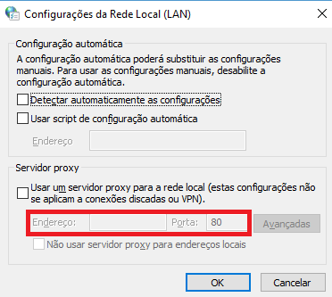

Configurando Git com proxy e autenticação
Created by Fernando Marques

Descobrindo IP do proxy
- Abra o chrome
- Pelo chrome entre em chrome://settings/?search=proxy
- Clique em Abrir configurações de proxy
- Clique em Configurações da LAN
- Em servidor proxy haverá um enderaço com IP
- 
- Agora podemos configurar o git
Configuração 1 - wincred
- Essa configuração é mais segura que a 2
- Abra o git bash
git config http.proxy http://proxyUsername@IP:porta git config https.proxy https://proxyUsernameP:porta git config --global credential.helper wincred- Ao passar pelo proxy uma janela abrirá perguntando a senha
Configuração 2 - Local
- Atenção as informações de login e senha serão armazenadas em disco, e não criptografadas
- Abra o git bash
git config http.proxy http://proxyUsername:proxyPassword@IP:porta git config https.proxy https://proxyUsername:proxyPassword@IP:porta git config --get http.proxy- Caso sua senha tenha caracteres especiais, use %code
- URL Encode/Decode
Proxy funcionando! :)
- Agora vamos testar o proxy
git clone https://github.com/fernandomarques/sm.git